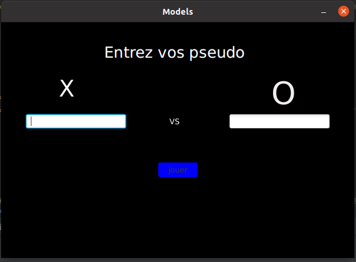
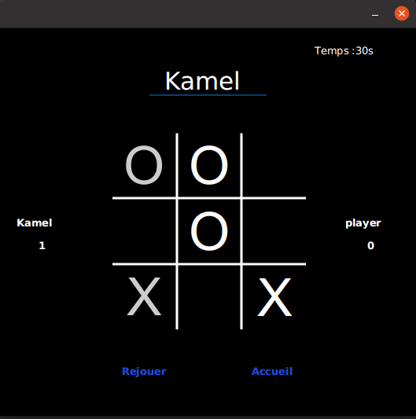

Tic Tac Toe

1 Introduction
Le Morpion est un jeu de société classique qui se joue sur un plateau de 3x3 cases. Dans ce projet, nous avons développé une application JavaFX qui permet de jouer au Morpion contre l’ordinateur ou avec un ami sur le même ordinateur. Nous avons utilisé JavaFX pour créer une interface graphique agréable et facile à utiliser, ainsi que pour mettre en œuvre la logique du jeu. Notre application permet à l’utilisateur de choisir de jouer en premier ou de laisser l’ordinateur ou son ami commencer, ainsi que de choisir le niveau de difficulté de l’ordinateur. Nous avons également implémenté une fonctionnalité de détection de fin de partie pour déterminer le vainqueur ou s’il y a match nul.
2 Context
Le projet consiste à développer une application de Morpion avec JavaFX en respectant plusieurs fonctionnalités clés. L’interface doit permettre à l’utilisateur de choisir entre différents modes de jeu, y compris homme contre IA ou homme contre homme. De plus, l’application doit permettre de régler le niveau de difficulté de l’IA, ce qui permettra aux joueurs de personnaliser leur expérience de jeu.
L’interface doit également identifier clairement le vainqueur en traitant spécifiquement les pions de la ligne gagnante. De plus, l’application doit contenir une menuBar qui permettra de supprimer les modèles appris et de modifier la configuration des différents niveaux de difficulté enregistrés dans le fichier config.txt via des fenêtres dédiées.
Un aspect important du projet est l’espace de visualisation de la phase d’apprentissage de l’IA, qui doit inclure un indicateur de progression dans un processus dédié. L’écran ne doit pas rester figé en cas de chargement ou d’apprentissage du modèle de l’IA, ce qui rendra l’expérience de jeu plus fluide et agréable pour l’utilisateur.
Le projet doit également inclure deux processus de transition vus en cours, ce qui per- mettra de rendre l’interface plus interactive et immersive. Le code doit être clair et séparer la gestion des données de celle de l’affichage, ce qui facilitera la maintenance et les modifica- tions ultérieures.
Enfin, les évaluations porteront également sur la qualité de l’interface graphique et l’utilisabilité de l’application, en suivant le prototype réalisé durant la phase d’ergonomie et en spécifiant les modifications éventuelles apportées et les raisons qui ont entraîné ces changements.
3 Conception de l’interface utilisateur et spécifications fonctionnelles
La conception de l’interface utilisateur est une étape cruciale dans le développement de notre application de jeu de morpion. Elle doit être conçue de manière à être intuitive et facile à utiliser pour les utilisateurs. Pour répondre à ces critères, nous avons choisi d’utiliser la librairie Java FX pour la création de l’interface graphique. Nous avons également effectué une phase d’ergonomie en amont, qui nous a permis de réfléchir aux besoins des utilisateurs et à leur expérience utilisateur. Dans ce rapport, nous allons présenter notre processus de conception, en détaillant les spécifications fonctionnelles que nous avons définies pour notre interface utilisateur.
3.1 Conception de l’interface utilisateur
3.1.1 Conception de l’écran d’accueil
a conception de l’écran d’accueil a été l’un des éléments clés de notre projet de déve- loppement de jeu Tic Tac Toe. Nous avons cherché à créer une interface utilisateur intuitive et facile à utiliser pour les joueurs, tout en offrant des options claires pour choisir entre les différents modes de jeu disponibles, à savoir joueur contre joueur, joueur contre IA, et les paramètres du jeu. Nous avons également mis l’accent sur l’esthétique en utilisant des images de haute qualité pour rendre l’interface plus attrayante et engageante pour les joueurs. La conception de l’écran d’accueil est donc une partie importante de l’expérience utilisateur globale et contribue grandement à l’attrait du jeu pour les utilisateurs. Voici une image:

3.1.2 Conception de l’écran de jeu pour Humain vs Humain
La conception de l’écran de jeu pour la modalité ”Humain vs Humain” a été pensée de manière à offrir une expérience de jeu agréable et intuitive. L’interface propose un plateau de jeu de 3x3 cases, sur lequel les joueurs peuvent cliquer pour placer leur symbole respectif. Les joueurs peuvent suivre leur progression grâce à un système de marquage des cases jouées. Des messages informatifs s’affichent à l’écran pour guider les joueurs tout au long de la partie. Enfin, le joueur gagnant est annoncé à la fin de la partie. L’objectif était de créer une interface simple et conviviale pour permettre aux joueurs de se concentrer sur l’essentiel : jouer et s’amuser. /paragraph ”Avant de pouvoir jouer, vous devez tout d’abord saisir les pseudos des joueurs dans la fenêtre qui s’affiche juste avant la dernière étape.”


3.1.3 Conception de l’écran de jeu pour Humain vs IA
La conception de l’écran de jeu pour la modalité ”Humain vs IA” a été pensée pour offrir une expérience de jeu plaisante et stimulante. Avant de commencer une partie, les joueurs ont la possibilité de choisir le niveau de difficulté souhaité parmi trois options : facile, moyen ou difficile. L’interface propose un plateau de jeu de 3x3 cases, sur lequel les joueurs peuvent cliquer pour placer leur symbole respectif. Les joueurs peuvent suivre leur progression grâce à un système de marquage des cases jouées. Des messages informatifs s’affichent à l’écran pour guider les joueurs tout au long de la partie. Enfin, le joueur gagnant est annoncé à la fin de la partie. L’objectif était de créer une interface simple et conviviale pour permettre aux joueurs de se concentrer sur l’essentiel : jouer et s’amuser.